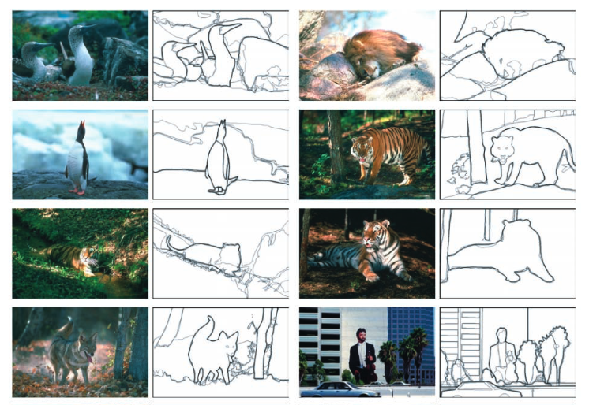
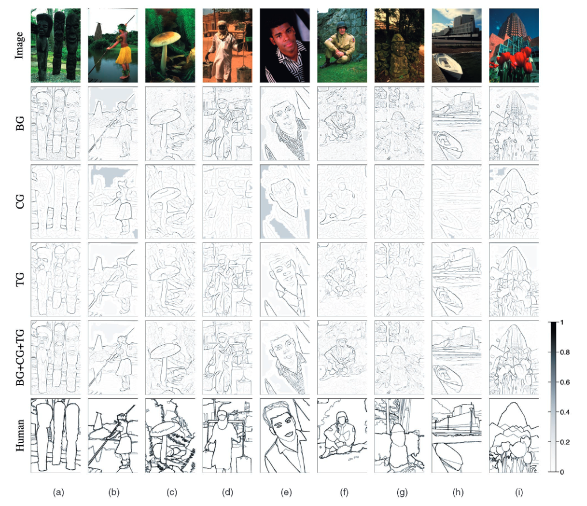

Feature Construction & Logistic Regression
Feature Construction
Selecting good features is often key to the performance of a machine learning algorithm.
To explain through a real world application (
Martin et al.. 2019 Learning to Detect Natural Image Boundaries
), consider the task of boundary detection in images where we want to define object boundaries.

Figure 1. Human-marked segment boundaries
Let \(y = \{+1, -1\}\) since we want to label each pixel as non-boundary (+1) or boundary (-1). Let \(x\) = every pixel (in RGB values). So \(n\) = # of pixels * # of images and the dimension \(d = 3\) for RGB. This is a binary classification problem.
Humans will be able to detect the boundaries through various cues like changes in color, brightness, and texture. It is because we use a collection of cues that allows us to detect boundaries in tricker images such as when the foreground and background are the same color or when shadows mimic boundaries. To do the same in machine learning, we can transform the inputs to a list of features that can help with the classification problem. $$\phi(x^i) = \{features\}$$ \(\phi(x^i)\) is a vector of features computed in the neighborhood of pixel \(i\), e.g. intensity, texture gradient, oriented gradient, etc..

Figure 2. Boundaries produced by various gradient detectors
In the research paper, they used brightness gradient (BG), color gradient (CG), and texture gradient (TG) as their feature transformations. As can be seen from Figure 2, the boundaries were best detected when using all the 3 cues.